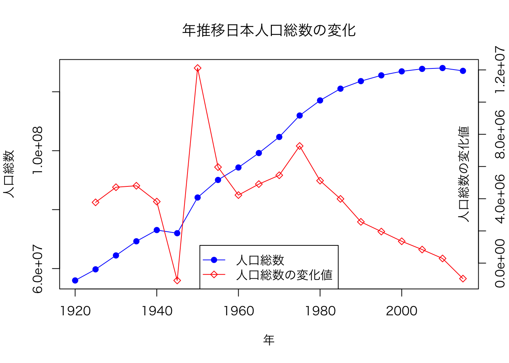

[1] 50.53 代码 & 脚本 & 项目
3.1 有什么区别吗
大家可能会有疑问，为什么一本R语言教程，怎么现在还没开始讲R语言呢？
因为主要是面向非程序员的，所以在正式学习R语言之前，我们需要先了解一些基本的概念，比如代码、脚本和项目。
这些概念在编程中非常重要，同时也是我们学习R语言的基础。
3.2 代码（Code）
代码语句是编程语言的基本构成单位，可以用于实现特定功能或解决特定问题。
- 特点：
- 可以是单个语句或一组语句。
- 通常较为简单，解决特定的小问题。
- 时常需要复用，可以将其封装为函数。
# 一组复杂的代码语句
# 输出进度
v <- 1:101 # 创建向量1到100
n <- length(v) # 计算向量长度
for (i in seq(len = n)) {
# 每执行20次，输出当前的进度
vi <- v[i]
if (i %% 20 == 0) {
# 输出保留两位小数的百分比
cat(sprintf("%0.2f%%\n", i / n * 100))
}
}19.80%
39.60%
59.41%
79.21%
99.01%
提示
怎么写出更好的代码
明确目的：确保代码片段有一个明确和容易理解的任务。
变量命名：使用有意义和描述性强的变量名。
注释：添加必要的注释来解释代码的功能或某个复杂的操作。
简洁性：避免不必要的复杂性，代码应该尽可能简洁。
向量化：尽量使用R语言提供的原生函数。
可读性：保持代码的可读性，适当地使用空格和缩进。
遵循这些准则可以提高代码片段的质量，使其更易于理解和维护。
3.3 脚本文件（Script）
脚本是一组预编写的代码，用于自动执行一系列任务。
注释
完整文件参见src/03/plot_population.r。
'data.frame': 395 obs. of 7 variables:
$ 元号 : chr "大正" "大正" "大正" "大正" ...
$ 和暦.年. : int 9 9 9 9 9 9 9 9 9 9 ...
$ 西暦.年. : int 1920 1920 1920 1920 1920 1920 1920 1920 1920 1920 ...
$ 年齢5歳階級: chr "総数" "0〜4歳" "5〜9歳" "10〜14歳" ...
$ 人口.総数. : int 55963053 7457715 6856920 6101567 5419057 4609310 3923949 3609450 3410738 3243764 ...
$ 人口.男. : int 28044185 3752627 3467156 3089225 2749022 2316479 2008005 1833443 1707771 1640254 ...
$ 人口.女. : int 27918868 3705088 3389764 3012342 2670035 2292831 1915944 1776007 1702967 1603510 ...| 元号 | 和暦.年. | 西暦.年. | 年齢5歳階級 | 人口.総数. | 人口.男. | 人口.女. |
|---|---|---|---|---|---|---|
| 大正 | 9 | 1920 | 総数 | 55963053 | 28044185 | 27918868 |
| 大正 | 9 | 1920 | 0〜4歳 | 7457715 | 3752627 | 3705088 |
| 大正 | 9 | 1920 | 5〜9歳 | 6856920 | 3467156 | 3389764 |
| 大正 | 9 | 1920 | 10〜14歳 | 6101567 | 3089225 | 3012342 |
| 大正 | 9 | 1920 | 15〜19歳 | 5419057 | 2749022 | 2670035 |
| 大正 | 9 | 1920 | 20〜24歳 | 4609310 | 2316479 | 2292831 |
# 绘制折线图
# 设置字体 注意⚠️：这里使用的是日文的字体，不同操作系统可能还有区别，需要自行调整
par(family = "HiraKakuProN-W3")
plot(dd$西暦.年., dd$人口.総数.,
type = "o",
pch = 19, # 设置点的形状 实心圆
col = "blue",
xlab = "年", ylab = "人口総数",
main = "年推移日本人口総数の変化"
)
# 添加人口变化值
par(new = TRUE)
plot(dd$西暦.年., c(NA, diff(dd$人口.総数.)),
type = "o",
pch = 23, # 设置点的形状 空心菱形
col = "red",
xlab = "", ylab = "", axes = FALSE
)
axis(4) # 添加右侧的y轴
mtext("人口総数の変化値", side = 4, line = -1.5) # 添加右侧y轴的标签
# 添加图例
legend("bottom",
lty = 1,
pch = c(19, 23),
legend = c("人口総数", "人口総数の変化値"),
col = c("blue", "red")
)
提示
为了提高代码的可读性、可维护性和可重用性， 下面是一些在.R文件里组织好代码的最佳实践。
添加注释和文档
使用合适的命名约定
- 使用有意义的变量名和函数名。
- 遵循一致的命名约定，例如使用下划线分隔符（
open_dir）。
- 分段和分节
- 使用空行和注释来分隔代码的不同部分或功能区块。
- 将代码分解为函数和代码块
- 将重复或可重用的代码段封装成函数。
- 如果可能，将相关的函数和代码块放在一起。
- 按逻辑顺序组织代码
- 通常，数据导入和清洗应该在文件的顶部，而分析和可视化应该在后面。
- 避免硬编码
- 使用变量而不是硬编码的数值。
- 使用版本控制
- 使用版本控制系统（如Git）来跟踪代码的变更。
- 代码测试和检查
- 在
if (FALSE) { }代码块里测试代码。
在后面的章节里，我们会不断践行这些最佳实践。
3.4 项目（Project）
3.4.1 项目架构
如果某个课题很复杂，那么可能需要多个脚本文件来实现，这时候就需要将这些脚本文件组织起来，形成一个项目。 通常不止脚本，还包括数据文件、文档等。
- 特点：
- 有明确的目标和范围。
- 通常包括版本控制、文档说明等。
- 可以包含多个子模块和依赖。
重要
项目怎么组织好代码
- 目录结构：有组织的文件和文件夹结构。
/lib： 常用代码库/src： 源代码/def： 配置文件(函数需要复杂配置时使用)/etc： 其他文件/data： 数据源文件(csv等)/rdata： 输出的数据文件(RData等)/out： 输出的图片、报告等/doc： 文档(非程序生成的文档)/test： 测试代码
- 版本控制：使用 Git 进行版本控制。
- README：添加 README 文件，解释项目的目的、安装、使用等。
3.4.2 创建项目
大家如果使用RStudio的话，可以使用RStudio的项目功能，可以很方便地管理项目。但这里我们自己手动创建并管理项目。
这里先向大家介绍.Rprofile。
.Rprofile 是一个 R 语言的初始化文件，它在 R 会话（session）启动时自动运行。这个文件允许你设置环境变量、加载包、执行函数或者运行任何其他 R 代码，从而定制你的 R 环境。
- 位置
- 在Windows 上：
系统级的
.Rprofile通常位于 R 的安装目录下的etc文件夹中，路径可能类似于C:\Program Files\R\R-x.y.z\etc\Rprofile.site。用户级的
.Rprofile通常位于用户的文档文件夹中的R目录下，路径可能是C:\Users\[username]\Documents\R\Rprofile。
- 在 macOS 和 Linux 上：
系统级的
.Rprofile通常位于/Library/Frameworks/R.framework/Resources/etc/（macOS）或/etc/R/（Linux）。用户级的
.Rprofile通常位于用户的主目录下的.Rprofile，路径可能是/Users/[username]/.Rprofile（macOS）或/home/[username]/.Rprofile（Linux）。
- 项目级的
.Rprofile
无论是哪个操作系统，项目级的 .Rprofile 文件通常位于项目的根目录中。
虽然文件的地址看起来比较复杂，一般来说，只要设置用户级的 .Rprofile 就可以了。
- 用途
- 环境定制：设置图形参数、选项（
options()）或者环境变量。 - 自动加载包：自动加载常用的 R 包。
- 函数定义：定义常用的自定义函数。
- 环境定制：设置图形参数、选项（
- 示例
一个简单的 .Rprofile 文件可能如下：
.First <- function() {
# R语言session启动时运行
cat("Hello World! \n")
addTaskCallback( # 自动更新session的提示符
function(expr, value, ok, visible) {
prompt <- paste0(format(Sys.time(), "⏰%H时%M分 "), "💋 ")
options(prompt = prompt, continue = "+\t")
TRUE
}
)
}
.Last <- function() {
# R语言session结束时运行
graphics.off() # a small safety measure.
cat("See you next time! \n")
}startproject <- function(dir, open = FALSE) {
# 开始一个新项目，并生成文件夹
# param dir: 项目名称
# param open: 是否打开文件夹
# return: NULL
# **目录结构**：有组织的文件和文件夹结构。
# - `/lib`： 常用代码库
# - `/src`： 源代码
# - `/def`： 配置文件(函数需要复杂配置时使用)
# - `/etc`： 其他文件
# - `/data`： 数据源文件(csv等)
# - `/rdata`： 输出的数据文件(RData等)
# - `/out`： 输出的图片、报告等
# - `/doc`： 文档(非程序生成的文档)
# - `/test`： 测试代码
if (missing(dir)) {
dir <- readline("请输入项目名称：")
}
dir.create2 <- function(path, ...) {
# 如果dir不存在，那么创建文件夹
if (!dir.exists(path)) {
dir.create(path, ...)
}
}
dir.create2(dir)
message("新建项目：", dir)
message(
"目录结构：", "\n",
dir, "/ \n",
" /lib： 常用代码库\n",
" /src： 源代码\n",
" /def： 配置文件(函数需要复杂配置时使用)\n",
" /etc： 其他文件\n",
" /data： 数据源文件(csv等)\n",
" /rdata： 输出的数据文件(RData等)\n",
" /out： 输出的图片、报告等\n",
" /doc： 文档(非程序生成的文档)\n",
" /test： 测试代码\n"
)
dir.create2(paste0(dir, "/lib"))
dir.create2(paste0(dir, "/src"))
dir.create2(paste0(dir, "/def"))
dir.create2(paste0(dir, "/etc"))
dir.create2(paste0(dir, "/data"))
dir.create2(paste0(dir, "/rdata"))
dir.create2(paste0(dir, "/out"))
dir.create2(paste0(dir, "/doc"))
dir.create2(paste0(dir, "/test"))
if (open) {
open_dir(dir)
}
}- 注意事项
.Rprofile在 R 会话开始时只运行一次，所以不适用于动态设置。- 修改全局
.Rprofile可能会影响所有 R 用户（如果你在多用户环境中），所以通常建议在用户目录或项目目录中设置.Rprofile。
使用 .Rprofile 可以大大提高工作效率，但也需要谨慎，以避免不必要的副作用或错误。
上述.Rprofile文件保存在本书根目录。
我们将startproject函数保存在Rprofile里，这样每次启动R session的时候， 执行startproject函数，可以创建一个新的项目。
新建项目：myproject目录结构：
myproject/
/lib： 常用代码库
/src： 源代码
/def： 配置文件(函数需要复杂配置时使用)
/etc： 其他文件
/data： 数据源文件(csv等)
/rdata： 输出的数据文件(RData等)
/out： 输出的图片、报告等
/doc： 文档(非程序生成的文档)
/test： 测试代码通过以上的组织和实践，你可以更有效地管理R语言的代码、脚本和项目。
下面就让我们真正踏入R语言的世界吧。
.R或者.r文件，两者都是R语言源文件后缀名。使用的时候并没有严格区分。实际上，任何后缀名的文本文件都可以。。。↩︎
日本政府統計の総合窓口https://www.e-stat.go.jp/，数据更新很及时，感兴趣可以自己研究研究。↩︎